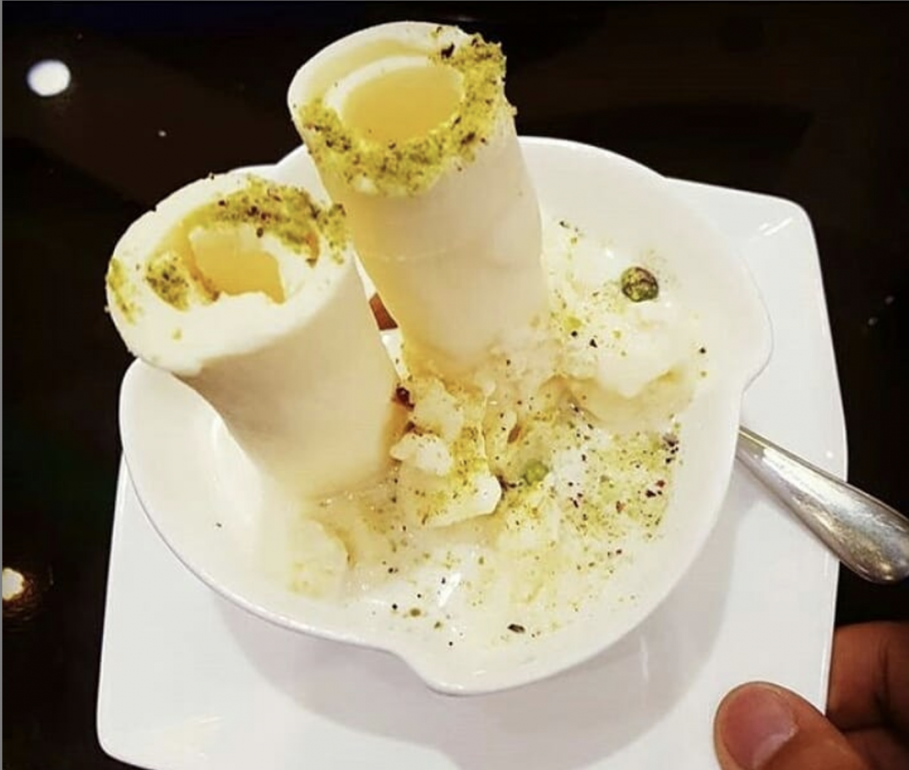
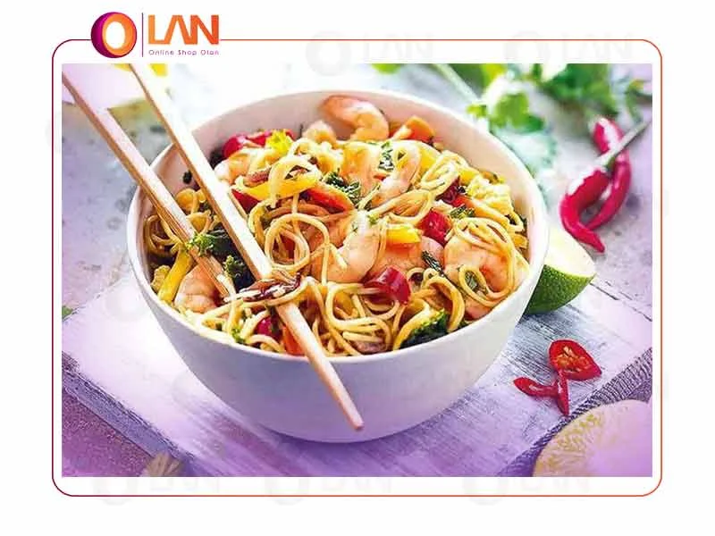

Kabuly Pulao

Ingredienrs:
- 2 cups basmati rice
- 500g lamb, cubed
- 1 large onion, seliced
- 1/2 cup raisins
- 2 carrots, julinned
- 1/4 cup slivered almonds
- 1/4 cup oil
- salt, black pepper, cumin, cardamom
Cooking Instructions:
- soak the rice in wather for 30 minutes and drain.
- Fry onions until golden brow.
- Add lamb and cook until browned season with spiced.
- Add Wather and simmer until the meat is tender.
- In a separate pan, fry carrots, raisins and almonds lightly
- Boil the rice until half cooked, then draim.
- Lyer meat and rice in a pot. top with carrot mixture.
- Cover and steam on low heat for 20-30 minutes.
Nutrition Information
| Calorise | 450 |
|---|---|
| Protein | 20g |
| Fat | 15g |
Rcipe by: Ahmad Zahir
Average Rating:4.5/5
Shir Yakh (Afghan Ice Cream)
Descrition:A creamy and refreshing frozen dessert that made with milk, sugar and cardemom a beloved Afhan treat during hot summer days.
Ingredients
- 2 cups full-fat milk
- 1/4 cup sugar
- 1/4 tsp cardemom powder
- 1 tsp rose water (optional)
- Crushed ice or freezer for chiling
Instructions
- Boil the milk and sugar together until slightly thickened.
- Add cardemom and rose water.
- Let the mixture cool.
- pour into small small cups and freeze for 4-6 hours
- serve cold , optionally topped with crushed pistachios or nuts. /li>
Nutrition Information
| Calorise | 200 |
|---|---|
| Protein | 6g |
| Fat | 8g |
Noodel
Description
A quick and tasty dish made with boiled noodles, vegetales and spices . Great for lunch or dinner when you're short on time!
Ingredients
- 200g noodels
- 1 tbsp oil
- 1/2 cup chopped carrots
- 1/2 cup bell peppers
- 2 tbsp soy sauce
- 1/2 tsp black papper
- salt to taste
Instructions
- Boil noodels according to package Instructions and drain.
- Heat oil in a pan and saute vegetables until soft.
- Add cooked noodels, soy sauce, salt and papper.
- Mix well and cook for 2-3 more minutes.
- Serve hot and enjoy
Nutrition Information
| Calorise | 200 |
|---|---|
| Protein | 6g |
| Fat | 8g |
Rate this Recipe
Rating Average:4.5/5